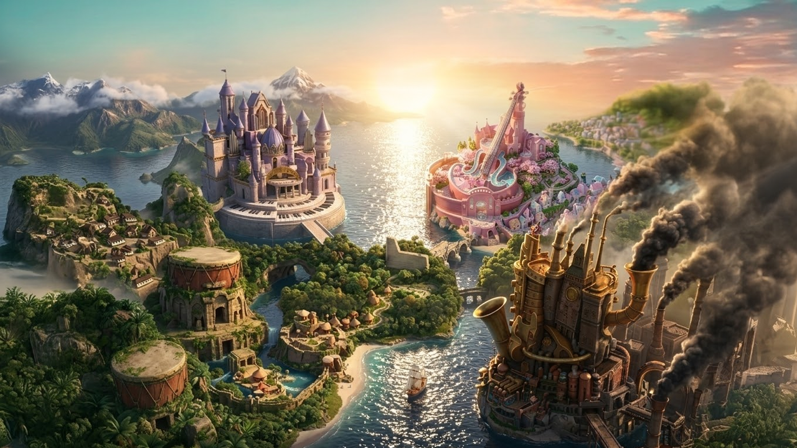
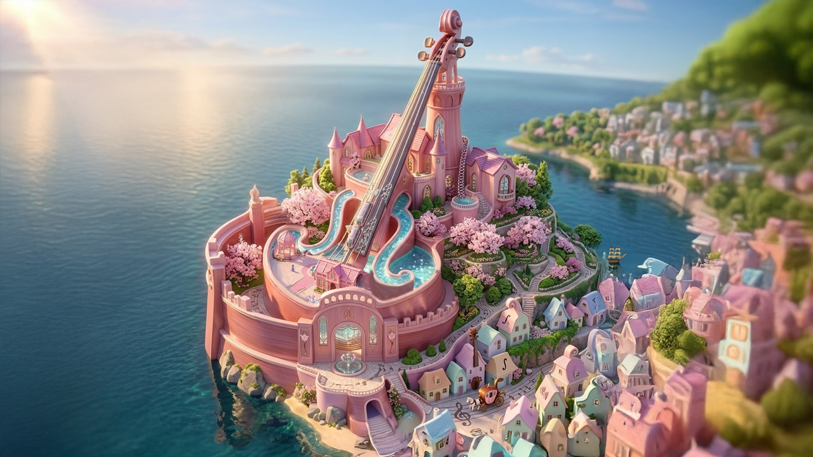
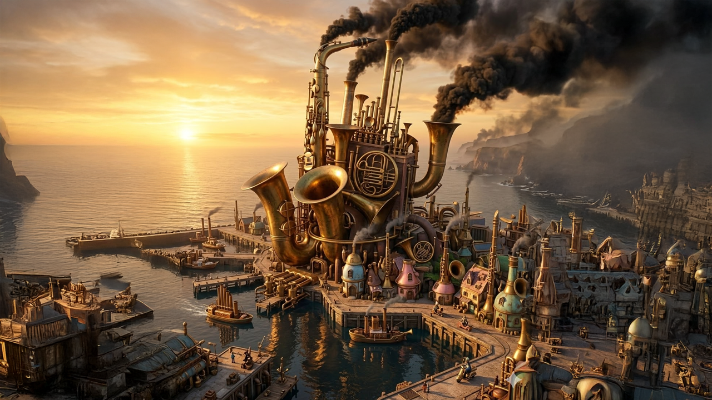
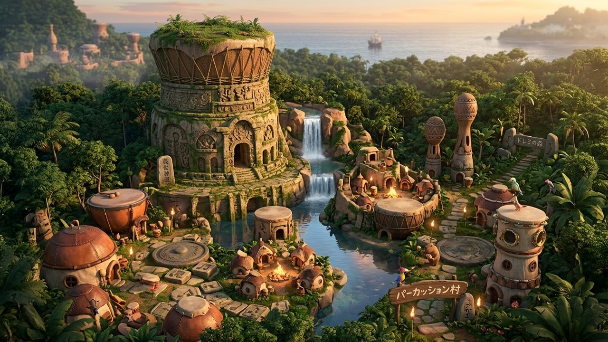
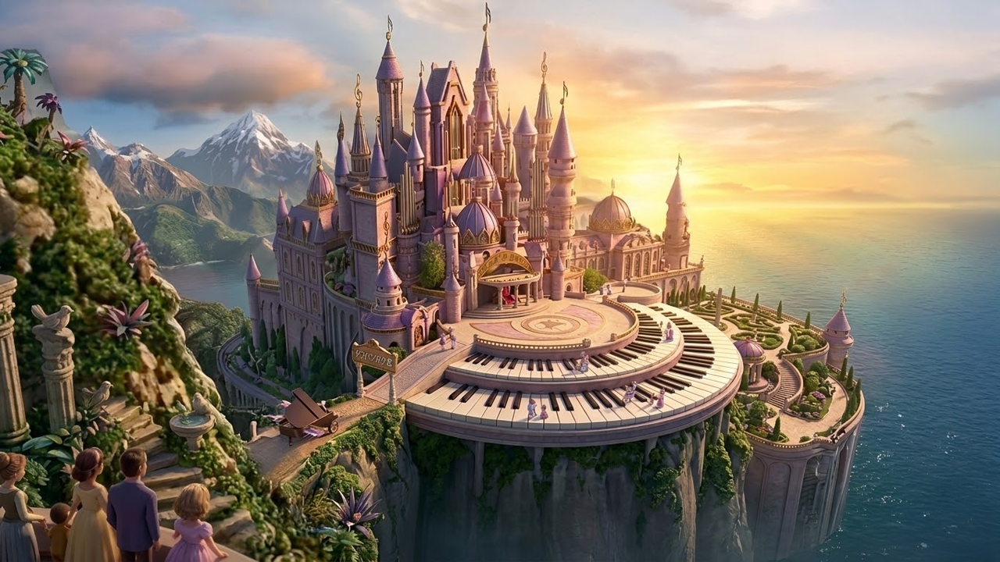

World Map
四つの音楽の国が広がる「ミュージックワールド」。
弦・管・打・鍵盤——
それぞれ異なる音楽の力を持ち、独自の文化と歴史を築いてきた。
長いあいだ、四つの国はそれぞれの地で平和な時を重ねていた。
しかしある日、黒幕の企みによってその均衡は崩れ、
世界を巻き込む大きな争いへと発展していく。

ムジカ大陸 ／ Musica Continent
The Four Musical Kingdoms

弦楽器が奏でる美しい音色に満ちた国。淡い桜色の城が水路の走る美しい街並みに聳え立ち、 伝統と格式を重んじる国民が静かに暮らす。春になると城の周囲に桜が咲き乱れ、 バイオリンやチェロの旋律が水路の反響とともに街中に広がる。 バイオリン姫の故郷であり、物語の出発点となる場所。

金管楽器のような輝くブラスの建造物と、蒸気機関・鉄鋼技術が発展した活気ある国。 即興を楽しむ国民性で、街角でジャズのような演奏が聞こえてくる。 吹奏楽騎士団が拠点を置く堅牢な要塞都市でもあり、 歯車と熱気が生み出す独特の世界を築き上げている。

広大な森の奥地に広がり、村々には打楽器を思わせる円形の住居が並ぶ。 そこには複数の部族が共存しており、 狂いのない拍子を刻みながらリズミカルに踊る暮らしが根付いている。 いくつもの集落を抜けた先には、 巨大な石をくり抜いて築かれた太古の神殿がそびえ、重厚な姿をどっしりと構えている。

巨大なパイプオルガンを思わせるような尖塔が空を貫く格式の高い国。 白と黒の建物が整然と並ぶ街並みは、まるで闇に浮かぶピアノの鍵盤のようだ。 皇帝が治める城がそびえ立ち、時折ドラゴンの影が舞うという噂も絶えない。 陰鬱さと妖艶さを兼ね備えたその城は、見る者を圧倒するほど神秘的で、 その威厳に誰もがおそれかしこまる。
World Background
このムジカ大陸では音楽そのものが魔法の力を持つ。各国固有の楽器から生まれる音色は、それぞれ異なる魔法的な効果を発揮する。
かつては四国が調和していたが、黒幕の企みにより対立が激化。ケンバンガク国を中心とした侵略戦争が起き、世界の均衡が崩れていく。
四つの国の音楽が合わさったとき生まれる伝説の力。これを取り戻すことが、世界に平和をもたらす唯一の方法とされている。